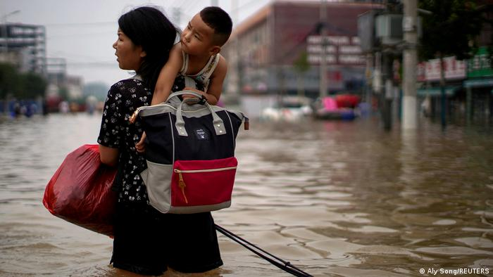
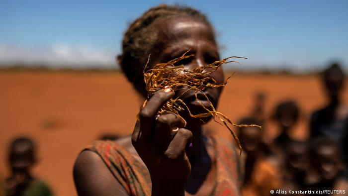
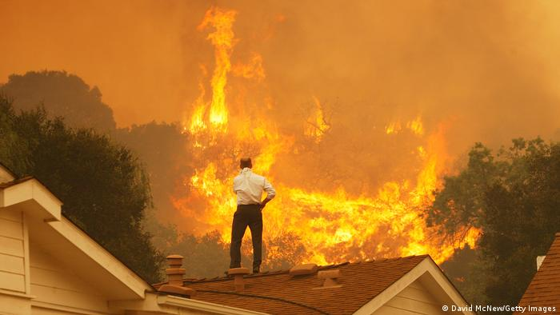
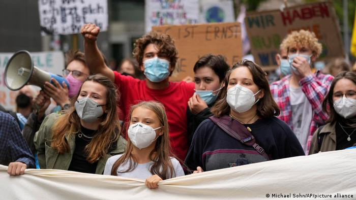

ENVIRONMENT
Why climate change often hits women harder than men
Stronger weather extremes prove particularly damaging for women and worsen existing inequalities, scientists have shown.

A cyclone that ripped through low-lying fishing communities. A wildfire that turned the sky red with embers and black with smoke. A drought that ravaged crops and pushed grain prices higher.
What weather extremes like these have in common is not just that burning fossil fuels makes them stronger — it's that they hit men and women in wildly different ways.
In Bangladesh, nine times more women than men were killed when Cyclone Gorki battered coasts in 1991. In Australia, twice as many women as men wanted to evacuate to safety during devastating bushfires in 2009. In Kenya, women were last in line to receive food during a 2016 drought that left more than 2 million people hungry.
For decades policymakers have ignored warnings that rigid gender roles make people more vulnerable to extreme weather. Now — with the effects of climate change hammering at their doors — they are being forced to consider how to adapt in ways that reduce those inequalities rather than increasing them.
Climate change puts pressure on people without power, said Lisa Schipper, co-author of a landmark report from the Intergovernmental Panel on Climate Change (IPCC) published in February. "When you're excluded from the decision-making club — as most women are in most countries — then you can't make decisions about the resources you know you need."

Climate change mostly hits women harder
People who are marginalized by society because of their gender are less able to adapt to climate change or recover from its effects, scientists concluded in a mega-review of the academic literature on climate impacts and adaptation. Women generally have less money, fewer opportunities and are not prioritized by policymakers, who are disproportionately men.
That, in turn, leaves them more vulnerable to further discrimination.
During droughts, women and girls are forced to walk further, and often in the dark to fetch water. That places them at greater risk of sexual violence. Longer distances also mean they make fewer trips, reducing the amount of water available to the family — and leaving even less for women in cultures where men are the first to eat and drink. The scarcity can also make menstrual hygiene harder and stop girls going to school.
Too much water can have similarly devastating effects. Floods that displace people or destroy toilets and make sanitation products scarce, carry an extra burden in countries with strong taboos around menstruation. In Bangladesh, more than two thirds of women working in factories lose six days of work per month because they lack safe places to change and dispose of menstrual pads, according to a study published in the journal Frontiers in Water in 2020.
Yet not all the effects of extreme weather on gender work in the same direction. In the US, men are twice as likely to die from heat-related illnesses than women because they are more likely to work outside on farms and building sites. During the deadly "Black Saturday" bushfires in Australia, men were more likely to stay to defend homes — and died in greater numbers as a result. They were less likely to heed the advice of friends and family to leave for safety, according to a study published in the journal Geographical Research in 2016.
Scientists have conducted little research on the effects of climate change on transgender people but in countries where data exists, they are more likely to be homeless and suffer discrimination from health services. That could place them in greater danger from weather extremes from heat to storms.

Governments promised gender-responsive adaptation
In 2015, world leaders signed the Paris Agreement to try to limit global warming to 1.5 degrees Celsius above pre-industrial temperatures. They acknowledged they should follow a "gender-responsive" approach when adapting to climate change, guided by the best available science.
Policymakers could do this by transforming systems that perpetuate inequality and renegotiating unequal power dynamics, the IPCC found in its report on adaptation. That could mean sharing wealth and resources equally and ensuring fair representation in environmental decision-making.
"To date, empirical evidence on such transformational change is sparse," the authors wrote.
Instead, the scientists found examples only of incremental changes. These include increasing the share of women in specific adaptation projects and paying special attention to gender in national climate policies.
"What we wrote wasn't breaking news," said Martina Caretta, a co-author of the IPCC report. "But what's frustrating as a scientist is that steps have not been taken to improve women's representation and decision-making power."

Women pollute less than men
Fairer representation could also slow climate change.
Women have lower emissions than men because they tend to eat less meat and drive less, a separate IPCC report on climate solutions found in April. In Germany and Sweden, men use 8% and 22% more energy than women, respectively.
"Women do tend to make more environmentally sensible choices," said Minal Pathak, a senior IPCC scientist. The caveat, she added, was that this was partly because women were less empowered to lead highly polluting lifestyles. "In some ways it is out of choice, in some ways not out of choice."
The scientists also found evidence that women contributed more to structural changes. From Sweden to Uganda, India to the Philippines, the student leaders of the Fridays for Future climate protest movement have been disproportionately women and girls. Carbon pollution is lower in countries where women have more of a political voice, even after controlling for income and other factors, the IPCC report found.
While there are many examples of countries led by women that hampered climate policy — former German Chancellor Angela Merkel blocked reforms of the EU's car industry, for instance — scientists say the broad trend is less polluting than under men. Across society, women prioritize climate change in the ways they vote, work, shop and get involved in their communities, the report found. They are more likely than men to become environmental activists and less likely to deny climate change.
"If you improve the political access and participation of women, climate action is stronger," said Pathak. "Countries where women have a stronger voice — a more political voice — drive climate action faster."